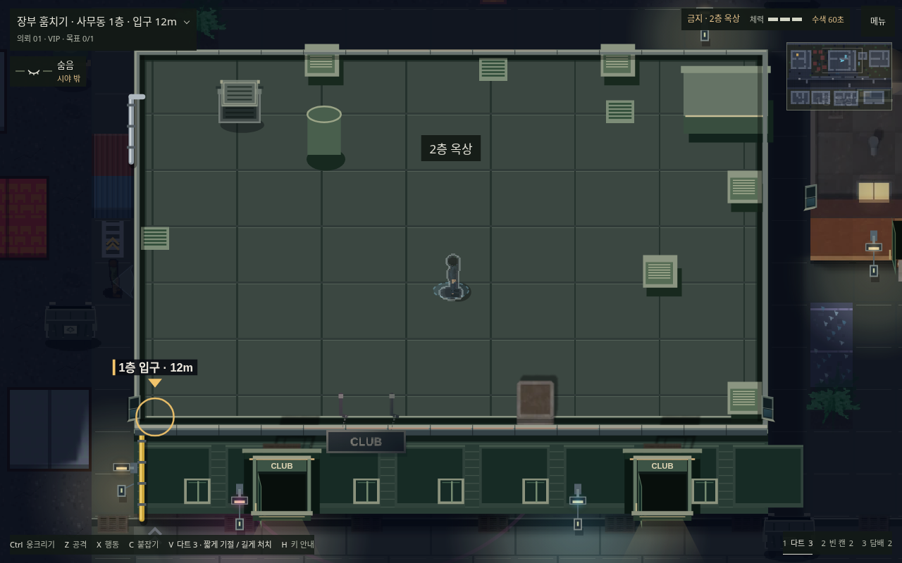
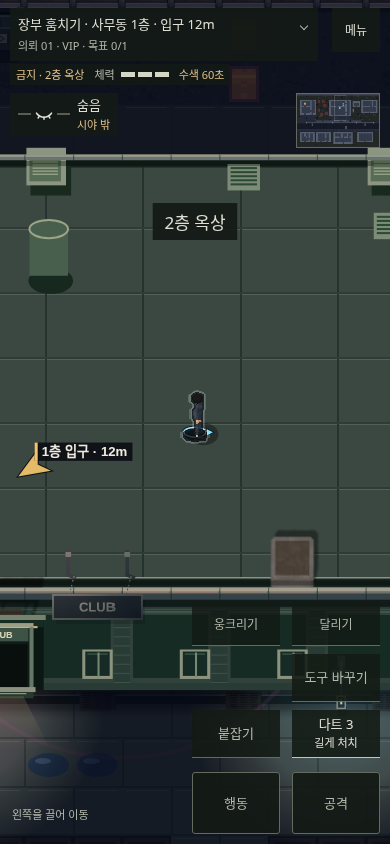
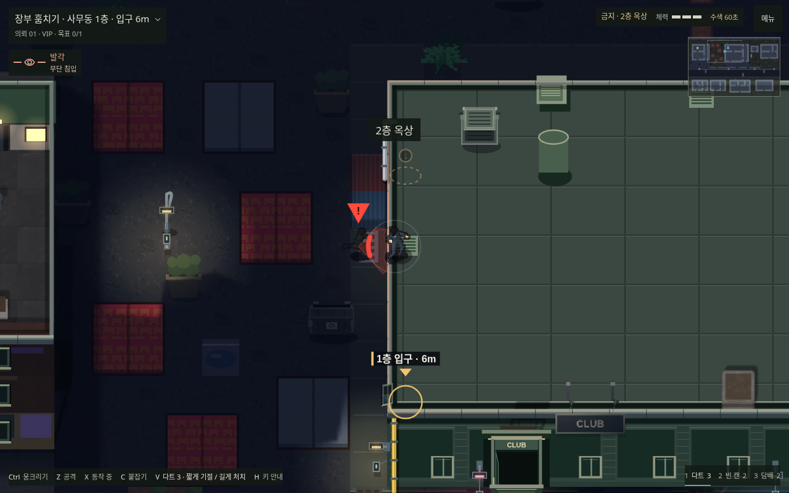
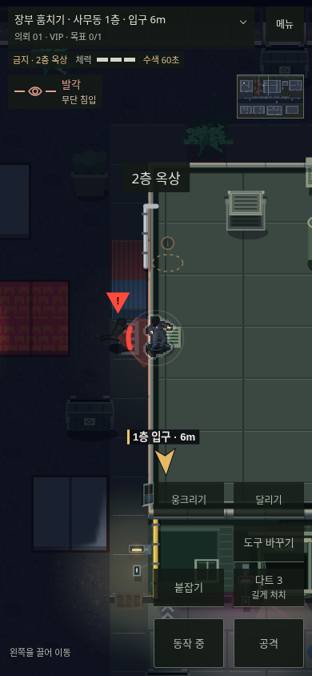
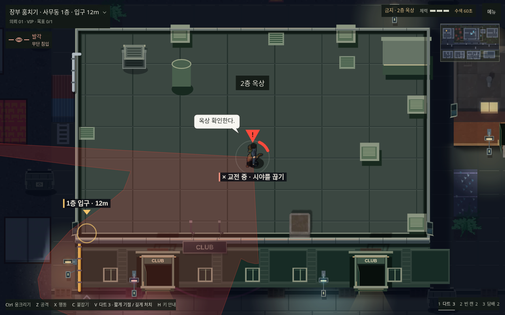
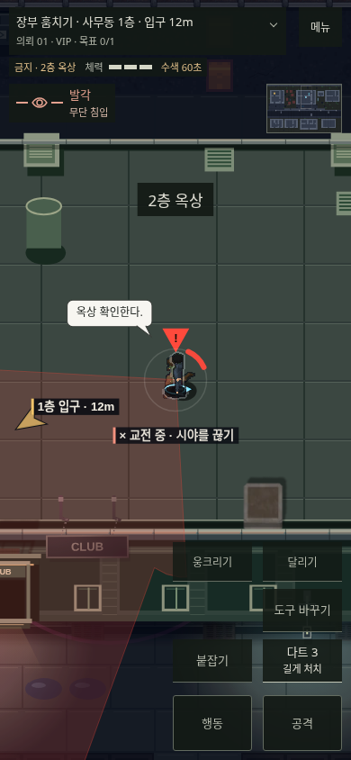

실제 클럽 지도의 통제된 브라우저 캡처다. 시야 관통을 막고, 경비가 마지막 목격 위치의 층까지 실제로 이동하도록 수정했다.
게임 실행 · 119개 경로·시야 검사 · 회귀 검사 원본
아래쪽 경비의 시선이 지붕을 관통하지 않는다.


실제로 보이는 가장자리에서의 발견은 유지한다.


마지막 목격 위치를 받은 경비가 계단을 통해 옥상에 도착한 통제 시나리오다.

